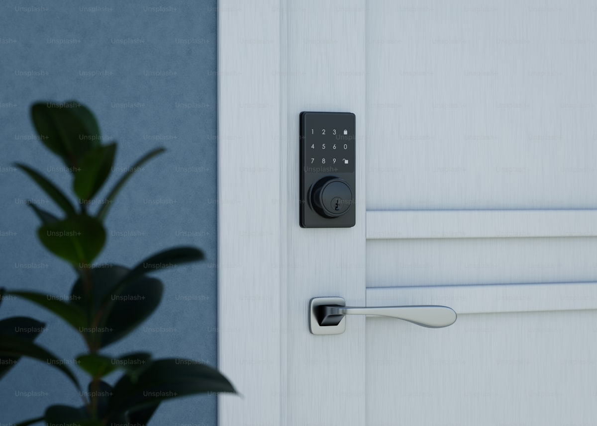

<!DOCTYPE html>
<html lang="zh-CN">
<head>
  <meta charset="UTF-8">
  <meta name="viewport" content="width=device-width, initial-scale=1.0">
  <title>新手引导 — Joyful Zone</title>
  <script src="https://cdn.tailwindcss.com"></script>
  <link rel="stylesheet" href="https://cdnjs.cloudflare.com/ajax/libs/font-awesome/6.5.1/css/all.min.css">
  <link href="https://fonts.googleapis.com/css2?family=Noto+Sans+SC:wght@400;500;600;700&display=swap" rel="stylesheet">
  <script src="shared.js"></script>
  <script>tailwind.config = jzTailwindConfig();</script>
</head>
<body>
<script>
document.addEventListener('DOMContentLoaded', () => {
  initAndroidPhone(`
    <div class="flex-1 flex flex-col bg-white min-h-0">
      <div class="flex justify-end p-4 flex-shrink-0">
        <button id="skip" class="text-sm text-slate-400 font-medium px-3 py-1">跳过</button>
      </div>
      <div id="slidesViewport" class="jz-onboard-viewport flex-1 min-h-0 overflow-hidden">
        <div id="slidesTrack" class="jz-onboard-track">
          <div class="jz-onboard-slide">
            
            <h2 class="text-xl font-bold text-ycu-navy">一键远程开锁</h2>
            <p class="text-slate-500 text-sm mt-3 leading-relaxed">长按 2 秒确认即可开门，防止误触。</p>
          </div>
          <div class="jz-onboard-slide">
            <div class="w-full h-48 rounded-2xl shadow-md-elev-2 mb-8 bg-gradient-to-br from-ycu-teal-light to-ycu-mint/60 flex items-center justify-center">
              <i class="fa-solid fa-clock-rotate-left text-6xl text-ycu-teal"></i>
            </div>
            <h2 class="text-xl font-bold text-ycu-navy">开锁记录云端同步</h2>
            <p class="text-slate-500 text-sm mt-3 leading-relaxed">密码、NFC、指纹、远程开锁全记录，可按方式筛选查询。</p>
          </div>
          <div class="jz-onboard-slide">
            <div class="w-full h-48 rounded-2xl shadow-md-elev-2 mb-8 bg-gradient-to-br from-ycu-blue/10 to-ycu-teal-light flex items-center justify-center">
              <i class="fa-solid fa-fingerprint text-6xl text-ycu-blue"></i>
            </div>
            <h2 class="text-xl font-bold text-ycu-navy">用户与凭证管理</h2>
            <p class="text-slate-500 text-sm mt-3 leading-relaxed">添加家人账号，支持刷卡和指纹，在门锁屏上即可录入。</p>
          </div>
        </div>
      </div>
      <div class="px-8 pb-10 flex-shrink-0">
        <div id="dots" class="flex justify-center gap-2 mb-6"></div>
        <button id="next" class="w-full py-3.5 rounded-xl bg-ycu-teal text-white font-semibold shadow-md-elev-2">下一步</button>
      </div>
    </div>
  `);

  let i = 0;
  const slideCount = 3;
  const dots = document.getElementById('dots');
  for (let idx = 0; idx < slideCount; idx += 1) {
    dots.innerHTML += `<span class="w-2 h-2 rounded-full ${idx === 0 ? 'bg-ycu-teal w-6' : 'bg-slate-200'}" data-i="${idx}"></span>`;
  }

  function paintDots() {
    dots.querySelectorAll('span').forEach((d, j) => {
      d.className = j === i ? 'w-6 h-2 rounded-full bg-ycu-teal transition-all duration-300' : 'w-2 h-2 rounded-full bg-slate-200 transition-all duration-300';
    });
    document.getElementById('next').textContent = i === slideCount - 1 ? '开始使用' : '下一步';
  }

  const carousel = jzInitOnboardingCarousel({
    viewport: document.getElementById('slidesViewport'),
    track: document.getElementById('slidesTrack'),
    slideCount,
    getIndex: () => i,
    setIndex: (n) => { i = n; paintDots(); },
  });

  function finishOnboarding() {
    localStorage.setItem('jzOnboardingDone', '1');
    window.location.href = 'login.html';
  }
  document.getElementById('next').onclick = () => {
    if (i < slideCount - 1) carousel.goTo(i + 1);
    else finishOnboarding();
  };
  document.getElementById('skip').onclick = finishOnboarding;
});
</script>
</body>
</html>
